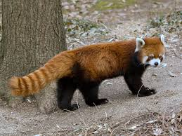

Red Panda
A female red panda can eat approximately 200,000 bamboo leaves in one day.The red panda is the mascot of the International Tea Festival in Darjeeling.
- Scientific Name: A. fulgens
- Average Lifespan: 12 years
- Average Length: 44 inches
- Habitat: Himalayan Mountains
It has reddish-brown fur, a long, shaggy tail, and a waddling gait due to its shorter front legs; it is roughly the size of a domestic cat, though with a longer body and somewhat heavier. It is arboreal, feeds mainly on bamboo, but also eats eggs, birds, and insects. It is a solitary animal, mainly active from dusk to dawn, and is largely sedentary during the day.